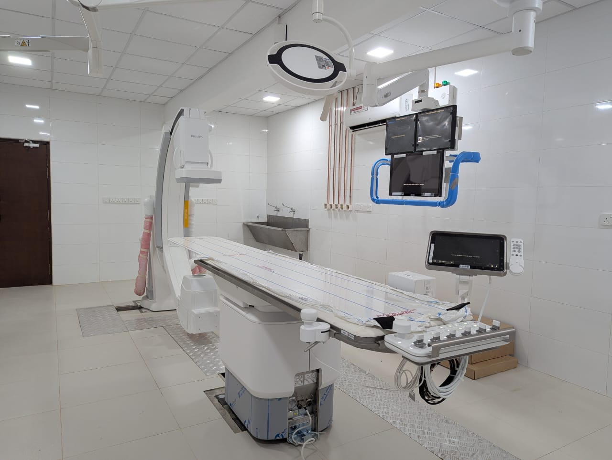
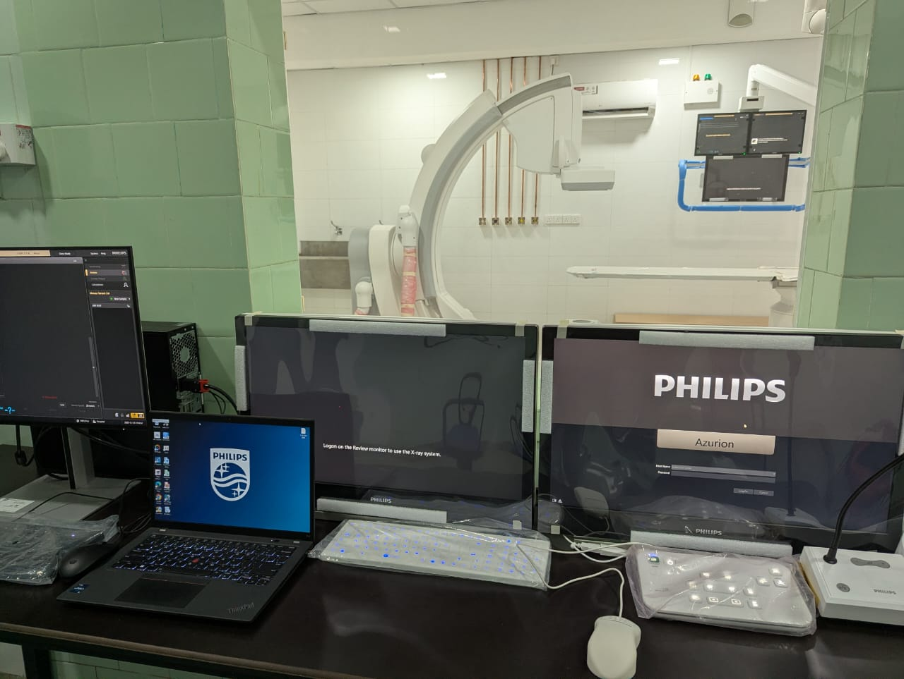
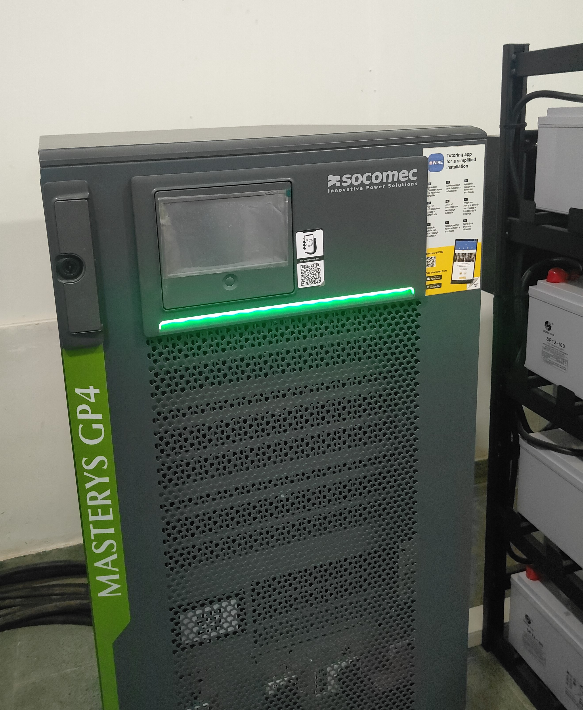
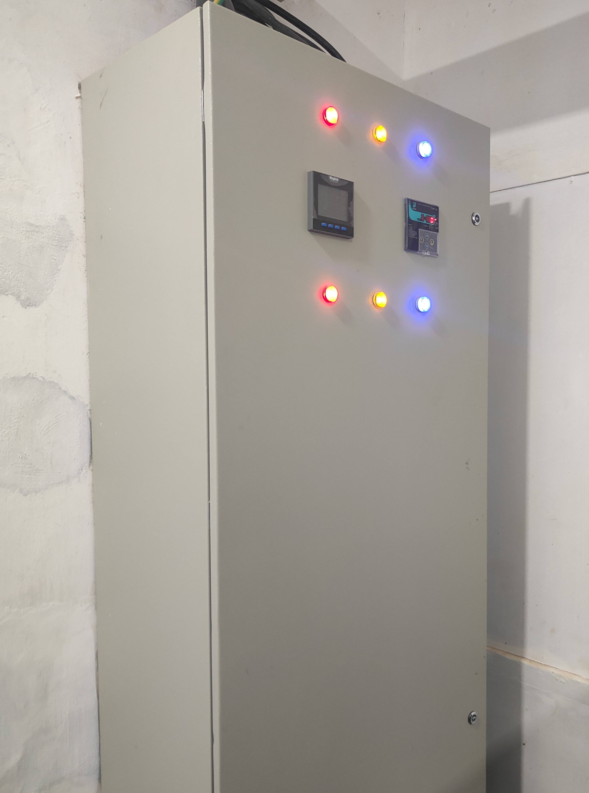
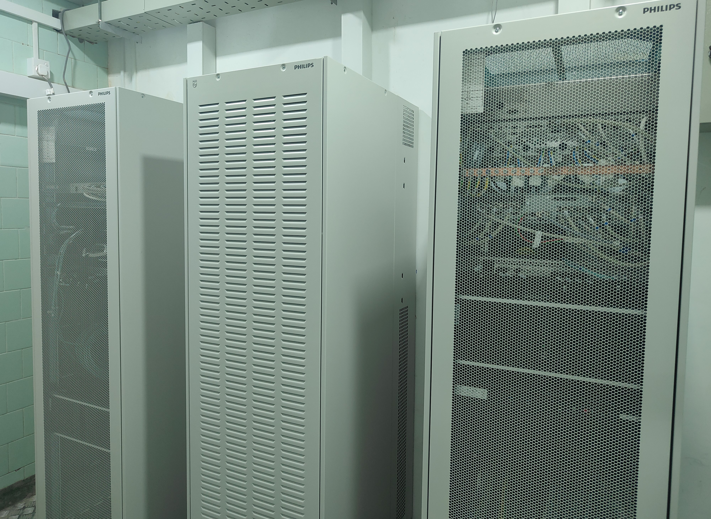

Designed the electrical distribution system for cardiac catheterization laboratory suites at two separate facilities, including Karapitiya National Hospital — a critical-care environment requiring high-reliability power delivery and strict segregation between clinical and support loads. Delivering the same design standard twice demonstrated both the repeatability of the approach and the ability to adapt it to each facility's specific room layout and equipment configuration.
System Architecture
- 250A main distribution panel as the primary supply point
- 95 sqmm main feeder cable sized for the connected load and cable run
- 120kVA Socomec Masterys GP4 UPS providing dedicated backup power for the cath machine and associated critical equipment
- Four dedicated sub-panels per facility: Monitoring Room, Cath Machine Room, Technical Room, and Cath Lab Room
Power Flow
250A · 95 sqmm feeder
120kVA Socomec GP4
incl. cath machine
Lights, AC, power
Lights, AC, power
Lights, AC, power
Feeder → Main Panel → UPS → Cath Machine Panel → Cath Lab Equipment, with parallel sub-panel feeds supplying lighting, air conditioning, and general power to the Monitoring, Technical, and Cath Lab Rooms independently.
Scope Covered
- Lighting system design
- Power outlet distribution
- Data point layout
- Load segregation between UPS-backed critical circuits and standard building supply
My Responsibilities
I was responsible for preparing electrical layouts, load calculations, cable sizing, BOQ preparation, and coordinating with consultants and site engineers.
Project Gallery




Skills Demonstrated
Critical-care electrical design, UPS system integration, panel schedule design, cable sizing for medical equipment loads, and repeatable design-standard delivery across multiple facilities.
Tools & Standards
AutoCAD, IEC Standards, Hospital Electrical Design Guidelines, Emergency Power System Standards.